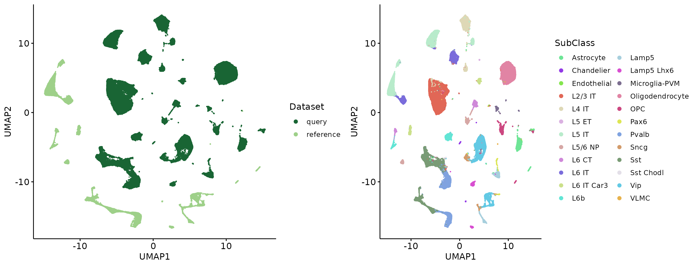
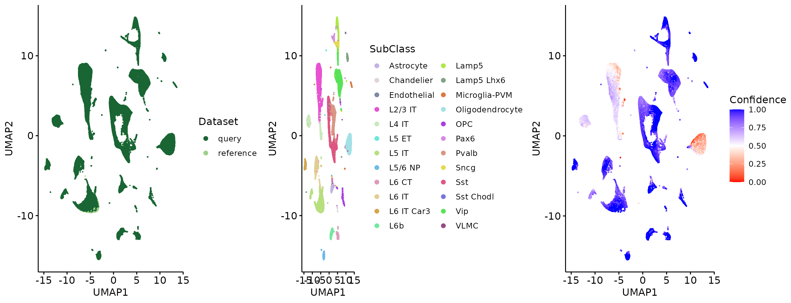

Knowledge transfer from reference to query using SIGNAL
Yang Zhou
2024-06-06
Source:vignettes/Knowledge_transfer.Rmd
Knowledge_transfer.RmdIntroduction
SIGNAL allows knowledge transfer form reference data to query data, containing two tasks: reference-based annotation and reference-based integration. The latter integrates data based on the labels predicted by the former. In this vignette, we use two human cortex scRNA-seq datasets (human MTG and human cortex datasets) to demonstrate how to perform these two tasks with SIGNAL. We use the human MTG as the reference and the human cortex as the query. We removed some cell type from reference to test label annotation and integration scenarios with novel cell types in query data.
Load data
We identify HVGs from reference and read the expression matrix after reference and query have been normalized and subset by HVGs. Among them, 2000 genes in query overlapped with identified HVGs. We represent the missing gene in query as 0.
ref_X = readRDS(paste0("/home/server/zy/group_scripts/datasets_preparation/Human_MTG/X.rds"))
ref_meta = readRDS(paste0("/home/server/zy/group_scripts/datasets_preparation/Human_MTG/meta.rds"))[, c("Batch", "SubClass")]
ref_meta$Dataset = "reference"
ref_meta = ref_meta[which(!ref_meta$SubClass %in% c("Sst Chodl", "L5 ET", "Endothelial", "L4 IT", "Oligodendrocyte", "L2/3 IT")), ]
ref_X = ref_X[, rownames(ref_meta)]
query_X = readRDS("/home/server/zy/group_scripts/datasets_preparation/Human_cortex/new_X.rds")
query_meta = readRDS("/home/server/zy/group_scripts/datasets_preparation/Human_cortex/meta.rds")[, c("Batch", "SubClass")]
query_meta$Dataset = "query"
str(ref_X)## Formal class 'dgCMatrix' [package "Matrix"] with 6 slots
## ..@ i : int [1:47935347] 17 42 44 59 82 87 91 100 104 106 ...
## ..@ p : int [1:85652] 0 540 1177 1961 2453 2940 3427 3969 4793 5192 ...
## ..@ Dim : int [1:2] 4000 85651
## ..@ Dimnames:List of 2
## .. ..$ : chr [1:4000] "MIR1302-2HG" "LINC02593" "SAMD11" "TMEM88B" ...
## .. ..$ : chr [1:85651] "AAACCCAAGTGATCGG-L8TX_191029_01_A07-1156636564" "AAACCCACAGGACTTT-L8TX_191029_01_A07-1156636564" "AAACCCAGTCTCGGAC-L8TX_191029_01_A07-1156636564" "AAACCCAGTTCTCGCT-L8TX_191029_01_A07-1156636564" ...
## ..@ x : num [1:47935347] 3.445 0.446 0.753 1.89 0.446 ...
## ..@ factors : list()
str(ref_meta)## 'data.frame': 85651 obs. of 3 variables:
## $ Batch : chr "Donor1" "Donor1" "Donor1" "Donor1" ...
## $ SubClass: chr "Sst" "L5 IT" "L5 IT" "L5 IT" ...
## $ Dataset : chr "reference" "reference" "reference" "reference" ...
str(query_X)## Formal class 'dgCMatrix' [package "Matrix"] with 6 slots
## ..@ i : int [1:173988543] 11 46 48 61 63 69 70 71 72 77 ...
## ..@ p : int [1:379331] 0 354 792 1312 1726 2177 2699 3095 3549 4008 ...
## ..@ Dim : int [1:2] 2269 379330
## ..@ Dimnames:List of 2
## .. ..$ : chr [1:2269] "SAMD11" "TMEM88B" "VWA1" "HES5" ...
## .. ..$ : chr [1:379330] "AAACCCAAGAGAGGTA-L8TX_190416_01_C06-871132075" "AAACGAAGTTGACGGA-L8TX_190416_01_C06-871132075" "AAACGAATCTCAAAGC-L8TX_190416_01_C06-871132075" "AAACGCTGTACTCGCG-L8TX_190416_01_C06-871132075" ...
## ..@ x : num [1:173988543] 1.83 0.84 0.84 1.29 0.84 ...
## ..@ factors : list()
str(query_meta)## 'data.frame': 379330 obs. of 3 variables:
## $ Batch : chr "H17.26.003" "H17.26.003" "H17.26.003" "H17.26.003" ...
## $ SubClass: chr "L2/3 IT" "L2/3 IT" "L2/3 IT" "L2/3 IT" ...
## $ Dataset : chr "query" "query" "query" "query" ...Visualization of raw data
Colors = distinctColorPalette(24)
X = cbind(ref_X, query_X)
meta = rbind.data.frame(ref_meta, query_meta)
pca_res = irlba(t(X), nv = 50)
raw_emb = as.matrix(pca_res$u %*% diag(pca_res$d))
raw_umap = as.data.frame(umap(raw_emb))
colnames(raw_umap) = c("UMAP1", "UMAP2")
raw_umap = cbind.data.frame(meta, raw_umap)
p1 = ggscatter(raw_umap, x = "UMAP1", y = "UMAP2", size = 0.1, color = "Dataset", palette = c("#196534", "#9ED089"), legend = "right") +
guides(colour = guide_legend(override.aes = list(size = 2)))
p2 = ggscatter(raw_umap, x = "UMAP1", y = "UMAP2", size = 0.1, color = "SubClass", palette = Colors, legend = "right") +
guides(colour = guide_legend(override.aes = list(size = 2)))
plot_grid(p1, p2, align = 'h', axis = "b")
Label prediction and reference-based integration
We check whether SIGNAL can distinguish between cell types removed from reference.
predicted_labels = Run.LabelTransfer.Single(ref_X, ref_meta$SubClass, query_X)
str(predicted_labels)## 'data.frame': 379330 obs. of 2 variables:
## $ Prediction: chr "L6 IT" "L6 IT" "L5 IT" "L6 IT" ...
## $ Confidence: num 0.517 0.595 0.571 0.497 0.581 ...
meta$Prediction = c(ref_meta$SubClass, predicted_labels$Prediction)
meta$Confidence = c(rep(NA, nrow(ref_meta)), predicted_labels$Confidence)
signal_emb = Run.gcPCA(X, meta, g_factor = c("Prediction", "Dataset"), b_factor = "Batch",
excluded.cells = which(meta$Dataset== 'query')[which(predicted_labels$Confidence < 0.8)])## Run gcPCA!## gcPCA done!
signal_umap = as.data.frame(umap(t(signal_emb)))
colnames(signal_umap) = c("UMAP1", "UMAP2")
signal_umap = cbind.data.frame(meta, signal_umap)
q1 = ggscatter(signal_umap, x = "UMAP1", y = "UMAP2", size = 0.1, color = "Dataset", palette = c("#196534", "#9ED089"), legend = "right") +
guides(colour = guide_legend(override.aes = list(size = 2)))
q2 = ggscatter(signal_umap, x = "UMAP1", y = "UMAP2", size = 0.1, color = "SubClass", palette = Colors, legend = "right") +
guides(colour = guide_legend(override.aes = list(size = 2)))
q3 = ggscatter(signal_umap[which(meta$Dataset == "query"),], x = "UMAP1", y = "UMAP2", size = 0.1, color = "Confidence", legend = "right") + gradient_color(c("red", "white", "blue"))
plot_grid(q1, q2, q3, align = 'h', axis = "b", nrow = 1)
Session Info
## R version 4.2.3 (2023-03-15)
## Platform: x86_64-conda-linux-gnu (64-bit)
## Running under: Ubuntu 22.10
##
## Matrix products: default
## BLAS/LAPACK: /home/server/anaconda3/envs/zy/lib/libopenblasp-r0.3.21.so
##
## locale:
## [1] LC_CTYPE=en_US.UTF-8 LC_NUMERIC=C
## [3] LC_TIME=en_US.UTF-8 LC_COLLATE=en_US.UTF-8
## [5] LC_MONETARY=en_US.UTF-8 LC_MESSAGES=en_US.UTF-8
## [7] LC_PAPER=en_US.UTF-8 LC_NAME=C
## [9] LC_ADDRESS=C LC_TELEPHONE=C
## [11] LC_MEASUREMENT=en_US.UTF-8 LC_IDENTIFICATION=C
##
## attached base packages:
## [1] stats graphics grDevices utils datasets methods base
##
## other attached packages:
## [1] cowplot_1.1.1 randomcoloR_1.1.0.1 ggpubr_0.6.0
## [4] ggplot2_3.4.4 uwot_0.2.2 irlba_2.3.5.1
## [7] Matrix_1.5-4.1 SIGNAL_1.0.0
##
## loaded via a namespace (and not attached):
## [1] matrixStats_1.0.0 fs_1.6.4 flock_0.7
## [4] RcppAnnoy_0.0.22 doParallel_1.0.17 tools_4.2.3
## [7] backports_1.4.1 bslib_0.7.0 utf8_1.2.4
## [10] R6_2.5.1 BiocGenerics_0.44.0 colorspace_2.1-0
## [13] withr_3.0.0 tidyselect_1.2.1 bit_4.0.5
## [16] curl_5.2.1 compiler_4.2.3 bigparallelr_0.3.2
## [19] textshaping_0.3.7 cli_3.6.2 BiocNeighbors_1.16.0
## [22] desc_1.4.3 labeling_0.4.3 sass_0.4.9
## [25] scales_1.3.0 pkgdown_2.0.7 systemfonts_1.0.6
## [28] stringr_1.5.1 digest_0.6.35 rmarkdown_2.26
## [31] pkgconfig_2.0.3 htmltools_0.5.8.1 sparseMatrixStats_1.10.0
## [34] MatrixGenerics_1.10.0 fastmap_1.1.1 highr_0.10
## [37] rlang_1.1.3 rstudioapi_0.15.0 jquerylib_0.1.4
## [40] generics_0.1.3 farver_2.1.1 jsonlite_1.8.8
## [43] mclust_6.0.0 BiocParallel_1.32.6 dplyr_1.1.4
## [46] car_3.1-2 magrittr_2.0.3 Rcpp_1.0.12
## [49] munsell_0.5.1 S4Vectors_0.36.2 fansi_1.0.6
## [52] abind_1.4-5 lifecycle_1.0.4 stringi_1.8.3
## [55] yaml_2.3.8 carData_3.0-5 Rtsne_0.17
## [58] grid_4.2.3 parallel_4.2.3 lattice_0.21-8
## [61] knitr_1.46 ps_1.7.6 pillar_1.9.0
## [64] ggsignif_0.6.4 bigstatsr_1.5.12 codetools_0.2-19
## [67] stats4_4.2.3 bigassertr_0.1.6 glue_1.7.0
## [70] evaluate_0.23 V8_4.4.2 vctrs_0.6.5
## [73] foreach_1.5.2 gtable_0.3.5 purrr_1.0.2
## [76] tidyr_1.3.1 cachem_1.0.8 xfun_0.43
## [79] broom_1.0.5 RcppEigen_0.3.4.0.0 ff_4.0.12
## [82] RSpectra_0.16-1 rstatix_0.7.2 ragg_1.2.7
## [85] tibble_3.2.1 iterators_1.0.14 memoise_2.0.1
## [88] cluster_2.1.4 rmio_0.4.0